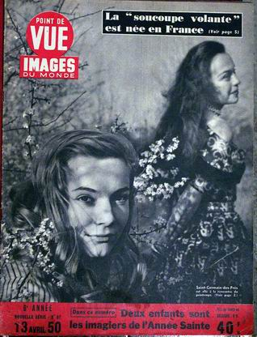

La société Land-Air Inc est officiellement mandatée pour conduire des recherches scientifiques sur le
phénomènes des boules de feu vertes.
L'Aurore n° 1730 publie un article intitulé "Les U.S.A. fabriqueraient des
soucoupes volantes".
A Boston, la tour de l'aéroport de Logan observe durant 10
mn une lumière ovale passant du bleu au blanc, puis au rouge. Elle se dédouble et finit en un ballet de lumières,
qui disparaissent au nord-est, contre le vent. Hynek, 1979.
A Juneau (Alaska), Mikel Konrad filme 8 disques qu'il voit
atterrir et décoller à 60 km au nord de cette ville Quincy, Guy.
Paris Match n° 56 du 15, avec un article : La vérité sur les soucoupes volantesPoint de Vue - Images du Monde n° 97 du 13, titrant : La "soucoupe volante est née en
France"

À Fort Monmouth (New Jersey),
le sergent-chef James de l'Armée voit 4 objets rectangulaires ambrés d'environ 3 ou 4 pieds. Au cours des
de l'observation, James les voit changer rapidement de vitesse et de direction, monter et descendre Cas Blue Book n° 711 non expliqué.
A Lufkin (Texas), Jack Robertson
roule en voiture environ 13 km à l'ouest de Lufkin quand il voit 1 objet rond d'environ 3 m de diamètre, planant
environ 7 m au-dessus de lui avec une lueur rouge sombre. L'engin s'envole dans un rugissement, alors que des
lueurs vives s'échappaient d'une rainure sous l'appareil. Quelques minutes plus tard, le témoin ressent une
sensation de brûlures sur son visage F.S., juillet 1959.
A Abbiate Guazzone (Varese, Italie), Bruno Facchini entend un bruit et
voit des lueurs vives provenant d'un objet sombre suspendu en l'air. Près de l'objet, 1 homme habillé de vêtements
moulants, portant un casque, semble effectuer des réparations. On voit 3 autres hommes à proximité. Leur travail
terminé, une trappe, à travers laquelle une lumière a brillé, est fermée, et la chose décolle. Le témoin a le temps
de noter de nombreux détails sur la machine et ses occupants Spencer, John: The UFO Encyclopedia, p. 1FSR 63, 2.
Dans une région isolée de l'Argentine, E. C. Bosa
découvre un disque volant écrasé et les cadavres de 4 petits pilotes. En retournant le lendemain sur les lieux avec
un ami, il ne retrouve plus qu'un tas de cendres encore fumantes. Un objet en forme de cigare est aperçu alors qu'il survole
l'endroit à haute altitude Source ?.